d3-three
Eighteen charts from the D3 gallery ported to three.js WebGPURenderer. Each picture is the screenshot the end-to-end harness grades against; open a page in a WebGPU browser to orbit it. The globe and ridgeline pages read two data files that are not published here yet, so only their screenshots show. Source: github.com/oneilltomhq/d3-three.
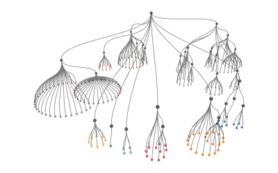
cluster dendrogram → cone tree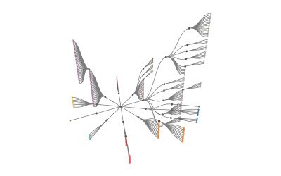
tidy tree → radial fan of tidy planes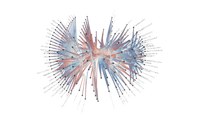
hierarchical edge bundling → sphere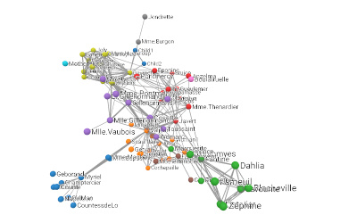
force-directed graph → d3-force-3d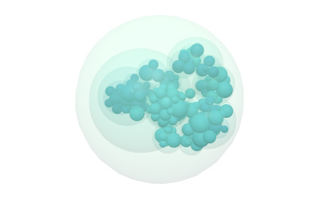
circle packing → sphere packing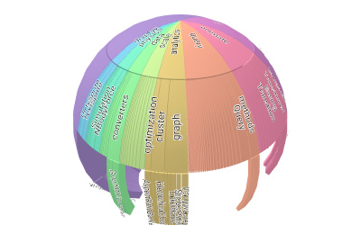
sunburst (flat)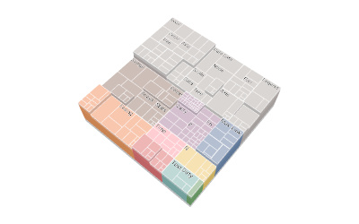
treemap (flat)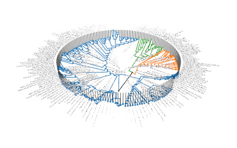
tree of life → cylinder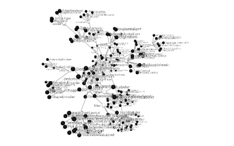
force-directed tree → d3-force-3d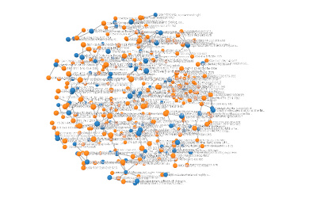
disjoint force-directed graph → d3-force-3d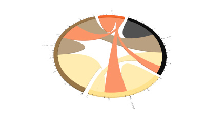
chord diagram (flat)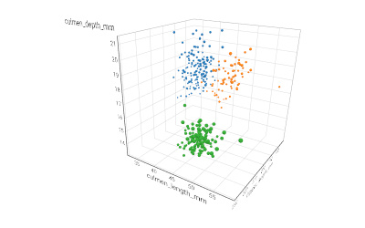
scatterplot matrix → one 3D scatter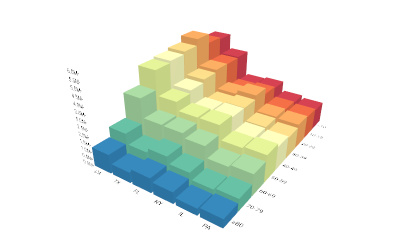
grouped bar chart → bar matrix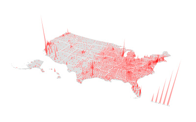
spike map, spikes standing up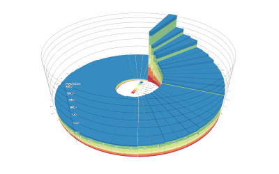
radial stacked bars, stacks lifted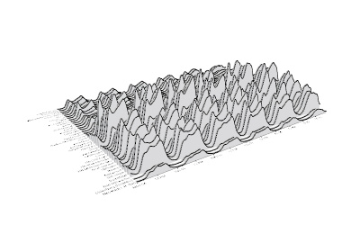
ridgeline plot, series along z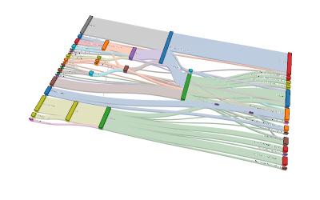
sankey (flat)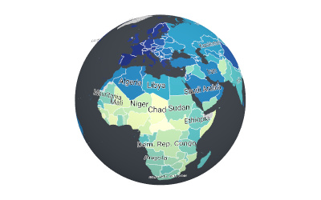
world choropleth → globe